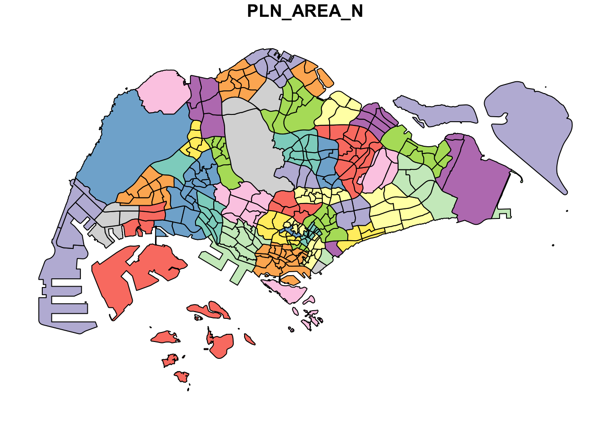
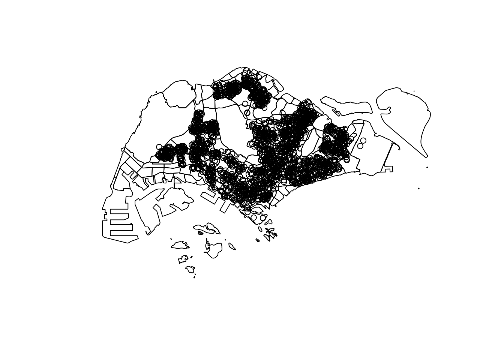
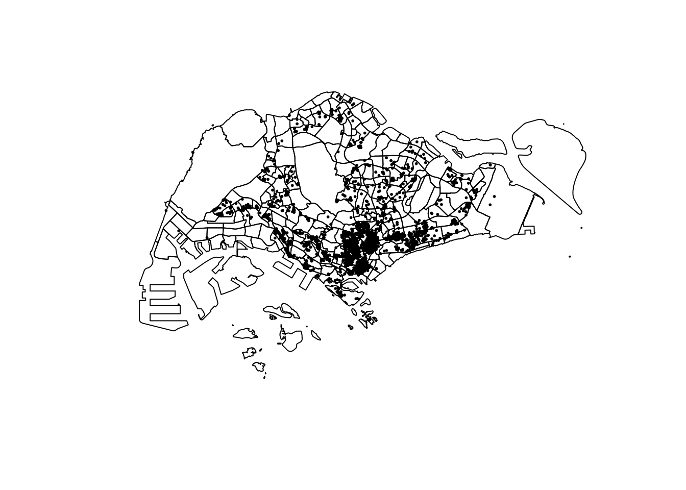
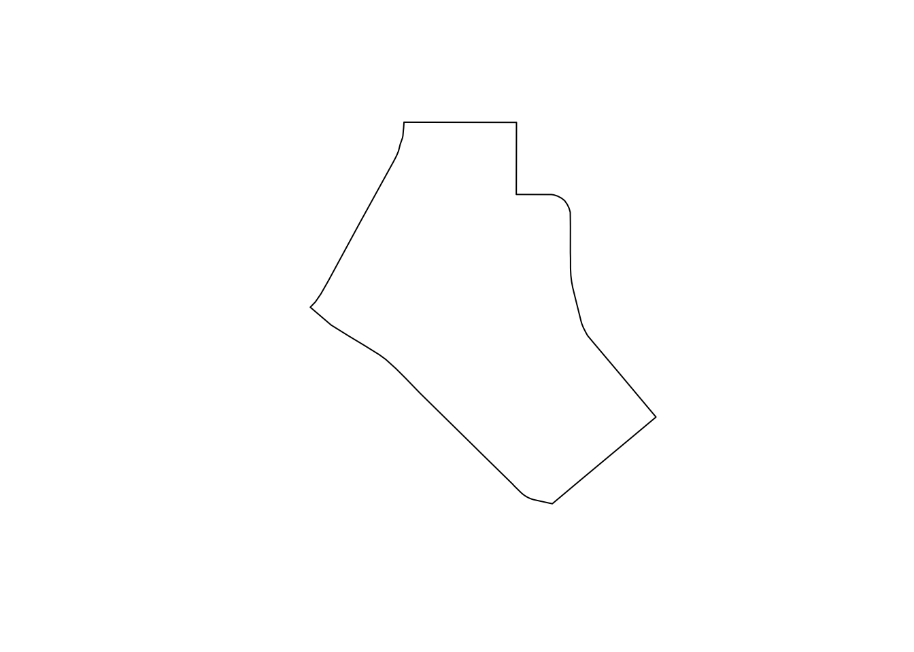
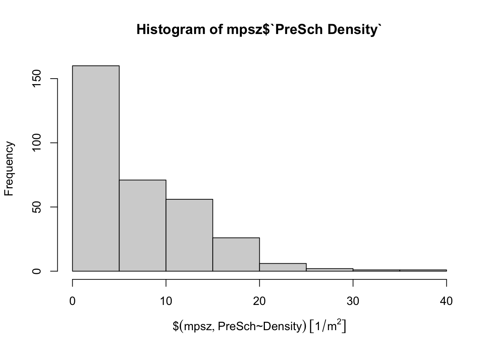

pacman::p_load(sf, tidyverse)Hands-on Exercise 1
1 Geospatial Data Science with R
1.1 Learning Outcome
By completing this hands-on exercise, you will learn how to:
Install and load sf and tidyverse packages in R.
Import geospatial data using
sffunctions.Import aspatial data using
readr.Explore simple feature data frames with Base R and sf functions.
Assign or transform coordinate systems using
sf.Convert aspatial data into an sf data frame.
Perform geoprocessing with
sf.Perform data wrangling with
dplyr.Conduct Exploratory Data Analysis (EDA) with
ggplot2.
1.2 Data Acquisition
Data are key to data analytics including geospatial analytics. Hence, before analysing, we need to assemble the necessary data. In this hands-on exercise, you are required to extract the necessary data sets from the following sources:
Master Plan 2014 Subzone Boundary (Web) from data.gov.sg
Pre-Schools Location from data.gov.sg
Cycling Path from LTADataMall
Latest version of Singapore Airbnb listing data from Inside Airbnb
1.2.1 Extracting the geospatial data sets
To get started, create a new folder called Hands-on_Ex in a working directory.
Next, create a new sub-folder called Hands-on_ex01 in the newly created Hands-on_Ex folder.
In the Hands-on_Ex01 folder, create a sub-folder called data. Then, inside the data sub-folder, create two sub-folders and name them geospatial and aspatial respectively.
Place Master Plan 2014 Subzone Boundary (Web), Pre-Schools Location and Cycling Pathzipped files into geospatial sub-folder and unzipped them. Copy the unzipped files from their respective sub-folders and place them inside geospatial sub-folder.
1.3 Getting Started
In this hands-on exercise, two R packages will be used. They are:
sf for importing, managing, and processing geospatial data, and
tidyverse for performing data science tasks such as importing, wrangling and visualising data.
Note
Tidyverse consists of a family of R packages. In this hands-on exercise, the following packages will be used:
readr for importing csv data,
tidyr for manipulating data,
dplyr for transforming data, and
ggplot2 for visualising data
Load the necessary R packages
1.4 Importing Geospatial Data
In this section, you will learn how to import the following geospatial data into R by using st_read() of sfpackage:
MP14_SUBZONE_WEB_PL, a polygon feature layer in ESRI shapefile format,CyclingPath, a line feature layer in ESRI shapefile format, andPreSchool, a point feature layer in kml file format.
1.4.1 Importing polygon feature data in shapefile format
The code chunk below uses st_read() function of sf package to import MP14_SUBZONE_WEB_PL shapefile into R as a polygon feature data frame. Note that when the input geospatial data is in shapefile format, two arguments will be used, namely: dsn to define the data path and layer to provide the shapefile name. Also note that no extension such as .shp, .dbf, .prj and .shx are needed.
mpsz <- st_read(
dsn = "/Users/jay/Desktop/rapu34/ISSS626-GAA/Hands-on_Ex/Hands-on_Ex01/data/Master_plan",
layer = "MP14_SUBZONE_WEB_PL"
)Reading layer `MP14_SUBZONE_WEB_PL' from data source
`/Users/jay/Desktop/rapu34/ISSS626-GAA/Hands-on_Ex/Hands-on_Ex01/data/Master_plan'
using driver `ESRI Shapefile'
Simple feature collection with 323 features and 15 fields
Geometry type: MULTIPOLYGON
Dimension: XY
Bounding box: xmin: 2667.538 ymin: 15748.72 xmax: 56396.44 ymax: 50256.33
Projected CRS: SVY21The message above reveals that the geospatial objects are multipolygon features. There are a total of 323 multipolygon features and 15 fields in mpsz simple feature data frame. mpsz is in svy21 projected coordinates systems. The bounding box provides the x extend and y extend of the data.
1.4.2 Importing polyline feature data in shapefile form
The code chunk below uses st_read() function of sf package to import CyclingPath shapefile into R as line feature data frame.
cyclingpath <- st_read(
dsn = "/Users/jay/Desktop/rapu34/ISSS626-GAA/Hands-on_Ex/Hands-on_Ex01/data/CyclingPath_Apr2025",
layer = "CyclingPathGazette"
)Reading layer `CyclingPathGazette' from data source
`/Users/jay/Desktop/rapu34/ISSS626-GAA/Hands-on_Ex/Hands-on_Ex01/data/CyclingPath_Apr2025'
using driver `ESRI Shapefile'
Simple feature collection with 4651 features and 19 fields
Geometry type: MULTILINESTRING
Dimension: XY
Bounding box: xmin: 11721.1 ymin: 27550.13 xmax: 42809.37 ymax: 49702.59
Projected CRS: SVY21The message above reveals that there are a total of 4651 features and 19 fields in cyclingpath sf data frame. The geospatial entities are capture in multilinestring object. Similar to the MP19_SUBZONE_WEB_PL shape file, this data set is in in svy21 projected coordinates system too.
1.4.3 Importing GIS data in kml format
The PreSchoolsLocation is in kml format. The code chunk below will be used to import the kml into R.
preschool <- st_read(
dsn = "/Users/jay/Desktop/rapu34/ISSS626-GAA/Hands-on_Ex/Hands-on_Ex01/data/Preschool/PreSchoolsLocation.kml"
)Reading layer `PRESCHOOLS_LOCATION' from data source
`/Users/jay/Desktop/rapu34/ISSS626-GAA/Hands-on_Ex/Hands-on_Ex01/data/Preschool/PreSchoolsLocation.kml'
using driver `KML'
Simple feature collection with 2290 features and 2 fields
Geometry type: POINT
Dimension: XYZ
Bounding box: xmin: 103.6878 ymin: 1.247759 xmax: 103.9897 ymax: 1.462134
z_range: zmin: 0 zmax: 0
Geodetic CRS: WGS 84
Tip
Notice that in the code chunk above, the complete path and the kml file extension were provided.
The message above reveals that preschool is a point feature data frame. There are a total of 2290 features and 2 fields. Different from the previous two simple feature data frame, preschool is in wgs84coordinates system.
1.5 Checking the Content of A Simple Feature Data Frame
1.5.1 Working with st_geometry()
In an sf data frame, the spatial information is stored in a special list column of class sfc.
While you could access it directly (e.g., mpsz$geom or mpsz[[1]]), the recommended and more flexible method is to use the st_geometry() function.
st_geometry(mpsz)Geometry set for 323 features
Geometry type: MULTIPOLYGON
Dimension: XY
Bounding box: xmin: 2667.538 ymin: 15748.72 xmax: 56396.44 ymax: 50256.33
Projected CRS: SVY21
First 5 geometries:
Note
Notice that the print only displays basic information of the feature class such as type of geometry, the geographic extent of the features and the coordinate system of the data.
1.5.2 Working with glimpse()
Besides the geometry, it’s important to check the attribute data, and glimpse() from dplyr is a quick way to do so.
glimpse(mpsz)Rows: 323
Columns: 16
$ OBJECTID <int> 1, 2, 3, 4, 5, 6, 7, 8, 9, 10, 11, 12, 13, 14, 15, 16, 17, …
$ SUBZONE_NO <int> 1, 1, 3, 8, 3, 7, 9, 2, 13, 7, 12, 6, 1, 5, 1, 1, 3, 2, 2, …
$ SUBZONE_N <chr> "MARINA SOUTH", "PEARL'S HILL", "BOAT QUAY", "HENDERSON HIL…
$ SUBZONE_C <chr> "MSSZ01", "OTSZ01", "SRSZ03", "BMSZ08", "BMSZ03", "BMSZ07",…
$ CA_IND <chr> "Y", "Y", "Y", "N", "N", "N", "N", "Y", "N", "N", "N", "N",…
$ PLN_AREA_N <chr> "MARINA SOUTH", "OUTRAM", "SINGAPORE RIVER", "BUKIT MERAH",…
$ PLN_AREA_C <chr> "MS", "OT", "SR", "BM", "BM", "BM", "BM", "SR", "QT", "QT",…
$ REGION_N <chr> "CENTRAL REGION", "CENTRAL REGION", "CENTRAL REGION", "CENT…
$ REGION_C <chr> "CR", "CR", "CR", "CR", "CR", "CR", "CR", "CR", "CR", "CR",…
$ INC_CRC <chr> "5ED7EB253F99252E", "8C7149B9EB32EEFC", "C35FEFF02B13E0E5",…
$ FMEL_UPD_D <date> 2014-12-05, 2014-12-05, 2014-12-05, 2014-12-05, 2014-12-05…
$ X_ADDR <dbl> 31595.84, 28679.06, 29654.96, 26782.83, 26201.96, 25358.82,…
$ Y_ADDR <dbl> 29220.19, 29782.05, 29974.66, 29933.77, 30005.70, 29991.38,…
$ SHAPE_Leng <dbl> 5267.381, 3506.107, 1740.926, 3313.625, 2825.594, 4428.913,…
$ SHAPE_Area <dbl> 1630379.27, 559816.25, 160807.50, 595428.89, 387429.44, 103…
$ geometry <MULTIPOLYGON [m]> MULTIPOLYGON (((31495.56 30..., MULTIPOLYGON (…glimpse() report reveals the data type of each fields. For example FMEL-UPD_D field is in date data type and X_ADDR, Y_ADDR, SHAPE_L and SHAPE_AREA fields are all in double-precision values.
1.5.3 Working with head()
Sometimes we would like to reveal complete information of a feature object, this is the job of head() of Base R
head(mpsz, n=5) Simple feature collection with 5 features and 15 fields
Geometry type: MULTIPOLYGON
Dimension: XY
Bounding box: xmin: 25867.68 ymin: 28369.47 xmax: 32362.39 ymax: 30435.54
Projected CRS: SVY21
OBJECTID SUBZONE_NO SUBZONE_N SUBZONE_C CA_IND PLN_AREA_N
1 1 1 MARINA SOUTH MSSZ01 Y MARINA SOUTH
2 2 1 PEARL'S HILL OTSZ01 Y OUTRAM
3 3 3 BOAT QUAY SRSZ03 Y SINGAPORE RIVER
4 4 8 HENDERSON HILL BMSZ08 N BUKIT MERAH
5 5 3 REDHILL BMSZ03 N BUKIT MERAH
PLN_AREA_C REGION_N REGION_C INC_CRC FMEL_UPD_D X_ADDR
1 MS CENTRAL REGION CR 5ED7EB253F99252E 2014-12-05 31595.84
2 OT CENTRAL REGION CR 8C7149B9EB32EEFC 2014-12-05 28679.06
3 SR CENTRAL REGION CR C35FEFF02B13E0E5 2014-12-05 29654.96
4 BM CENTRAL REGION CR 3775D82C5DDBEFBD 2014-12-05 26782.83
5 BM CENTRAL REGION CR 85D9ABEF0A40678F 2014-12-05 26201.96
Y_ADDR SHAPE_Leng SHAPE_Area geometry
1 29220.19 5267.381 1630379.3 MULTIPOLYGON (((31495.56 30...
2 29782.05 3506.107 559816.2 MULTIPOLYGON (((29092.28 30...
3 29974.66 1740.926 160807.5 MULTIPOLYGON (((29932.33 29...
4 29933.77 3313.625 595428.9 MULTIPOLYGON (((27131.28 30...
5 30005.70 2825.594 387429.4 MULTIPOLYGON (((26451.03 30...
Note
One of the useful argument of head() is it allows user to select the numbers of record to display (i.e. the n argument).
1.6 Plotting the Geospatial Data
Looking only at feature information is not sufficient in geospatial analysis; visualising the features is also important, and this can be easily done using the plot() function in R.
plot(mpsz)
The default plot of an sf object is a multi-plot of all attributes, up to a reasonable maximum as shown above. We can, however, choose to plot only the geometry by using the code chunk below.
plot(st_geometry(mpsz))
The plot the sf object by using a specific attribute as shown in the code chunk below.
plot(mpsz["PLN_AREA_N"])
Tip
plot() is appropriate for plotting the geospatial object for quick look. For high cartographic quality map, other R package such as tmap should be used.
Now, let us plot the preschool layer ontop of the mpsz layer by using the code chunk below.
plot(st_geometry(mpsz))
plot(st_geometry(preschool),
add = TRUE)
Important
Prof Quiz : Note that the preschool point objects failed to plot ontop of the mpsz layer. Do you know why?
Answer : The mpsz (subzone boundaries) data is in the SVY21 coordinate system (EPSG:3414, meter-based), while the preschool locations are in WGS84 (EPSG:4326, latitude–longitude). Since the two layers use different coordinate reference systems, they do not align when plotted together with plot(..., add=TRUE).
Therefore, you need to correct it as shown below:
preschool_svy21 <- st_transform(preschool, st_crs(mpsz))
plot(st_geometry(mpsz))
plot(st_geometry(preschool_svy21), add = TRUE, col = "skyblue", pch = 16)
1.7 Working with Projection
A map projection (or coordinate reference system, CRS) is a critical property of geospatial data.
When performing geoprocessing with multiple datasets, it is essential that they share the same coordinate system; otherwise, the layers will not align properly.
The process of converting a dataset from one coordinate system to another is known as projection transformation. This ensures spatial consistency and allows accurate overlay and analysis of different geospatial layers.
1.7.1 Assigning EPSG code to a simple feature data frame
When importing geospatial data into R, a common issue is that the dataset may have a missing or incorrectly assigned coordinate system (for example, when the .proj file of a shapefile is absent).
To check the coordinate system of a simple feature data frame, the st_crs() function from the sf package can be used.
st_crs(mpsz)Coordinate Reference System:
User input: SVY21
wkt:
PROJCRS["SVY21",
BASEGEOGCRS["SVY21[WGS84]",
DATUM["World Geodetic System 1984",
ELLIPSOID["WGS 84",6378137,298.257223563,
LENGTHUNIT["metre",1]],
ID["EPSG",6326]],
PRIMEM["Greenwich",0,
ANGLEUNIT["Degree",0.0174532925199433]]],
CONVERSION["unnamed",
METHOD["Transverse Mercator",
ID["EPSG",9807]],
PARAMETER["Latitude of natural origin",1.36666666666667,
ANGLEUNIT["Degree",0.0174532925199433],
ID["EPSG",8801]],
PARAMETER["Longitude of natural origin",103.833333333333,
ANGLEUNIT["Degree",0.0174532925199433],
ID["EPSG",8802]],
PARAMETER["Scale factor at natural origin",1,
SCALEUNIT["unity",1],
ID["EPSG",8805]],
PARAMETER["False easting",28001.642,
LENGTHUNIT["metre",1],
ID["EPSG",8806]],
PARAMETER["False northing",38744.572,
LENGTHUNIT["metre",1],
ID["EPSG",8807]]],
CS[Cartesian,2],
AXIS["(E)",east,
ORDER[1],
LENGTHUNIT["metre",1,
ID["EPSG",9001]]],
AXIS["(N)",north,
ORDER[2],
LENGTHUNIT["metre",1,
ID["EPSG",9001]]]]Although the mpsz data frame is projected in SVY21, its output shows EPSG 9001, which is incorrect. The correct EPSG code for SVY21 should be 3414.
To fix this, the st_set_crs() function from the sf package is used to assign the proper EPSG code.
mpsz <- st_set_crs(mpsz, 3414)Now, let us check the CSR again by using the code chunk below.
st_crs(mpsz)Coordinate Reference System:
User input: EPSG:3414
wkt:
PROJCRS["SVY21 / Singapore TM",
BASEGEOGCRS["SVY21",
DATUM["SVY21",
ELLIPSOID["WGS 84",6378137,298.257223563,
LENGTHUNIT["metre",1]]],
PRIMEM["Greenwich",0,
ANGLEUNIT["degree",0.0174532925199433]],
ID["EPSG",4757]],
CONVERSION["Singapore Transverse Mercator",
METHOD["Transverse Mercator",
ID["EPSG",9807]],
PARAMETER["Latitude of natural origin",1.36666666666667,
ANGLEUNIT["degree",0.0174532925199433],
ID["EPSG",8801]],
PARAMETER["Longitude of natural origin",103.833333333333,
ANGLEUNIT["degree",0.0174532925199433],
ID["EPSG",8802]],
PARAMETER["Scale factor at natural origin",1,
SCALEUNIT["unity",1],
ID["EPSG",8805]],
PARAMETER["False easting",28001.642,
LENGTHUNIT["metre",1],
ID["EPSG",8806]],
PARAMETER["False northing",38744.572,
LENGTHUNIT["metre",1],
ID["EPSG",8807]]],
CS[Cartesian,2],
AXIS["northing (N)",north,
ORDER[1],
LENGTHUNIT["metre",1]],
AXIS["easting (E)",east,
ORDER[2],
LENGTHUNIT["metre",1]],
USAGE[
SCOPE["Cadastre, engineering survey, topographic mapping."],
AREA["Singapore - onshore and offshore."],
BBOX[1.13,103.59,1.47,104.07]],
ID["EPSG",3414]]Notice that the EPSG code is 3414 now.
1.7.2 Transforming the projection of preschool from wgs84 to svy21.
In geospatial analytics, data often needs to be converted from a geographic coordinate system to a projected coordinate system, since geographic coordinates are unsuitable for distance or area calculations.
For example, the preschool data frame is currently in WGS84. In this case, st_set_crs() is not appropriate because the data must be mathematically reprojected. Instead, the st_transform() function is used to convert the dataset from WGS84 to SVY21.
Geometry set for 2290 features Geometry type: POINT Dimension: XYZ Bounding box: xmin: 103.6878 ymin: 1.247759 xmax: 103.9897 ymax: 1.462134 z_range: zmin: 0 zmax: 0 Geodetic CRS: WGS 84 First 5 geometries:
Let us perform the projection transformation by using the code chunk below.
preschool <- st_transform(preschool,
crs = 3414)
Note
In practice, we need to find out the appropriate project coordinate system to use before performing the projection transformation.
Next, let us display the content of preschool sf data frame as shown below.
Geometry set for 2290 features
Geometry type: POINT
Dimension: XYZ
Bounding box: xmin: 11810.03 ymin: 25596.33 xmax: 45404.24 ymax: 49300.88
z_range: zmin: 0 zmax: 0
Projected CRS: SVY21 / Singapore TM
First 5 geometries:Notice that it is in svy21 projected coordinate system now. Furthermore, if you refer to Bounding box:, the values are greater than 0-360 range of decimal degree commonly used by most of the geographic coordinate systems.
Now, let us try to plot the preschool layer ontop of mpsz layer again by using the similar code chunk you used earlier.
plot(st_geometry(mpsz))
plot(st_geometry(preschool), add = TRUE)
Notice that the composite map display like what we want now.
1.8 Importing and Converting An Aspatial Data
Sometimes we work with aspatial data, such as Airbnb listings. These are not geospatial datasets, but they may include coordinate fields (x and y) that can be used for spatial analysis.
In this section, the task is to import such data (e.g., listings.csv from Airbnb) into R as a tibble, and then convert it into a simple feature data frame for geospatial use.
1.8.1 Importing the aspatial data
Since listings data set is in csv file format, we will use read_csv() of readr package to import listing.csv as shown the code chunk below. The output R object is called listings and it is a tibble data frame.
listings <- read_csv("/Users/jay/Desktop/rapu34/ISSS626-GAA/Hands-on_Ex/Hands-on_Ex01/data/Airbnb/listings.csv")After importing the data file into R, Lets examine!
The code chunk below shows list() of Base R instead of glimpse() is used to do the job.
list(listings) [[1]]
# A tibble: 3,659 × 18
id name host_id host_name neighbourhood_group neighbourhood latitude
<dbl> <chr> <dbl> <chr> <chr> <chr> <dbl>
1 71609 Ensuite … 367042 Belinda East Region Tampines 1.35
2 71896 B&B Roo… 367042 Belinda East Region Tampines 1.35
3 71903 Room 2-n… 367042 Belinda East Region Tampines 1.35
4 275343 10min wa… 1439258 Kay Central Region Bukit Merah 1.29
5 275344 15 mins … 1439258 Kay Central Region Bukit Merah 1.29
6 294281 5 mins w… 1521514 Elizabeth Central Region Newton 1.31
7 324945 Comforta… 1439258 Kay Central Region Bukit Merah 1.29
8 330095 Relaxing… 1439258 Kay Central Region Bukit Merah 1.29
9 344803 Budget s… 367042 Belinda East Region Tampines 1.35
10 369141 5mins fr… 1521514 Elizabeth Central Region Newton 1.31
# ℹ 3,649 more rows
# ℹ 11 more variables: longitude <dbl>, room_type <chr>, price <dbl>,
# minimum_nights <dbl>, number_of_reviews <dbl>, last_review <date>,
# reviews_per_month <dbl>, calculated_host_listings_count <dbl>,
# availability_365 <dbl>, number_of_reviews_ltm <dbl>, license <chr>The Airbnb listings dataset contains 4,252 rows and 16 columns. The key fields for spatial analysis are latitude and longitude, given in decimal degrees under the WGS84 geographic coordinate system.
1.8.2 Creating a simple feature data frame from an aspatial data frame
The code chunk below converts listing data frame into a simple feature data frame by using st_as_sf()of sf packages
listings_sf <- st_as_sf(listings,
coords = c("longitude", "latitude"),
crs=4326) %>%
st_transform(crs = 3414)Key Points from the Arguments
The
coordsargument specifies the column names for coordinates, with the x-coordinate listed first, followed by the y-coordinate.The
crsargument defines the coordinate system in EPSG format (e.g., EPSG:4326 for WGS84, EPSG:3414 for Singapore SVY21). Additional codes can be found on epsg.io.The pipe operator (
%>%) allows chaining of functions, such as usingst_transform()to convert the new simple feature data frame into the SVY21 projected coordinate system.
The next step is to examine the structure and content of the newly created simple feature data frame.
Let’s examine!
glimpse(listings_sf)Rows: 3,659
Columns: 17
$ id <dbl> 71609, 71896, 71903, 275343, 275344, 29…
$ name <chr> "Ensuite Room (Room 1 & 2) near EXPO", …
$ host_id <dbl> 367042, 367042, 367042, 1439258, 143925…
$ host_name <chr> "Belinda", "Belinda", "Belinda", "Kay",…
$ neighbourhood_group <chr> "East Region", "East Region", "East Reg…
$ neighbourhood <chr> "Tampines", "Tampines", "Tampines", "Bu…
$ room_type <chr> "Private room", "Private room", "Privat…
$ price <dbl> 143, NA, 76, NA, NA, 85, NA, NA, 41, 79…
$ minimum_nights <dbl> 92, 92, 92, 180, 180, 92, 180, 180, 92,…
$ number_of_reviews <dbl> 19, 24, 46, 20, 16, 131, 17, 5, 60, 81,…
$ last_review <date> 2020-01-17, 2019-10-13, 2020-01-09, 20…
$ reviews_per_month <dbl> 0.12, 0.14, 0.27, 0.13, 0.10, 0.80, 0.1…
$ calculated_host_listings_count <dbl> 5, 5, 5, 58, 58, 7, 58, 58, 5, 7, 7, 1,…
$ availability_365 <dbl> 90, 79, 90, 153, 153, 365, 153, 153, 36…
$ number_of_reviews_ltm <dbl> 0, 0, 0, 0, 0, 0, 0, 0, 0, 0, 0, 0, 1, …
$ license <chr> NA, NA, NA, "S0399", "S0399", NA, "S039…
$ geometry <POINT [m]> POINT (41972.5 36390.05), POINT (…Table above shows the content of listing_sf. Notice that a new column called geometry has been added into the data frame. On the other hand, the longitude and latitude columns have been dropped from the data frame.
DIY
Using the method you learned earlier, plot listing_sf layer on top of mpsz layer.
Answer below:
# 1. Load the aspatial data
listing <- read.csv("data/Airbnb/listings.csv")
# 2. Convert tibble/data.frame to simple feature object
listing_sf <- listing %>%
st_as_sf(
coords = c("longitude", "latitude"), # x = lon, y = lat
crs = 4326 # WGS84
) %>%
st_transform(crs = 3414) # transform to SVY21plot(st_geometry(mpsz))
plot(st_geometry(listing_sf), add = TRUE, pch = 16, col = "black", cex = 0.4)
1.9 Geoprocessing with sf package
Beyond data handling tasks such as importing, exporting, or managing projections, the sf package also provides a rich set of geoprocessing functions (commonly known as GIS analysis). These functions allow us to address spatial questions and perform analytical operations directly within R.
1.9.1 Use case 1: Land acquisition analysis
1.9.1.1 The scenario
The authority is planning to upgrade the exiting cycling path. To do so, they need to acquire 5 metres of reserved land on the both sides of the existing cycling path. You are tasked to determine the extend of the land need to be acquired and their total area.
1.9.1.2 The solution
Firstly, st_buffer() of sf package is used to compute the 5-meter buffers around cycling paths.
buffer_cycling <- st_buffer(
cyclingpath, dist=5, nQuadSegs = 30)This is followed by calculating the area of the buffers as shown in the code chunk below.
buffer_cycling$AREA <- st_area(buffer_cycling)tidyverse version below:
buffer_cycling <- buffer_cycling %>%
mutate(AREA = st_area(geometry))Lastly, sum() of Base R will be used to derive the total land involved
sum(buffer_cycling$AREA)3561648 [m^2]We can also create a plot showing the buffer by a selected planning subzone.
Assuming that we are interested on the land acquisition in Tampines West planning subzone.
Firstly, filter() of dplyr package will be used to extract polygon feature of Tampines West by using the code chunk below.
mpsz_selected <- mpsz %>%
filter(SUBZONE_N == "TAMPINES WEST") Next, st_intersection() of sf package will be used to clip cycling buffers within Tampines West planning subzone.
st_crs(cyclingpath)Coordinate Reference System:
User input: SVY21
wkt:
PROJCRS["SVY21",
BASEGEOGCRS["WGS 84",
DATUM["World Geodetic System 1984",
ELLIPSOID["WGS 84",6378137,298.257223563,
LENGTHUNIT["metre",1]],
ID["EPSG",6326]],
PRIMEM["Greenwich",0,
ANGLEUNIT["Degree",0.0174532925199433]]],
CONVERSION["unnamed",
METHOD["Transverse Mercator",
ID["EPSG",9807]],
PARAMETER["Latitude of natural origin",1.36666666666667,
ANGLEUNIT["Degree",0.0174532925199433],
ID["EPSG",8801]],
PARAMETER["Longitude of natural origin",103.833333333333,
ANGLEUNIT["Degree",0.0174532925199433],
ID["EPSG",8802]],
PARAMETER["Scale factor at natural origin",1,
SCALEUNIT["unity",1],
ID["EPSG",8805]],
PARAMETER["False easting",28001.642,
LENGTHUNIT["metre",1],
ID["EPSG",8806]],
PARAMETER["False northing",38744.572,
LENGTHUNIT["metre",1],
ID["EPSG",8807]]],
CS[Cartesian,2],
AXIS["(E)",east,
ORDER[1],
LENGTHUNIT["metre",1,
ID["EPSG",9001]]],
AXIS["(N)",north,
ORDER[2],
LENGTHUNIT["metre",1,
ID["EPSG",9001]]]]st_crs(mpsz)Coordinate Reference System:
User input: EPSG:3414
wkt:
PROJCRS["SVY21 / Singapore TM",
BASEGEOGCRS["SVY21",
DATUM["SVY21",
ELLIPSOID["WGS 84",6378137,298.257223563,
LENGTHUNIT["metre",1]]],
PRIMEM["Greenwich",0,
ANGLEUNIT["degree",0.0174532925199433]],
ID["EPSG",4757]],
CONVERSION["Singapore Transverse Mercator",
METHOD["Transverse Mercator",
ID["EPSG",9807]],
PARAMETER["Latitude of natural origin",1.36666666666667,
ANGLEUNIT["degree",0.0174532925199433],
ID["EPSG",8801]],
PARAMETER["Longitude of natural origin",103.833333333333,
ANGLEUNIT["degree",0.0174532925199433],
ID["EPSG",8802]],
PARAMETER["Scale factor at natural origin",1,
SCALEUNIT["unity",1],
ID["EPSG",8805]],
PARAMETER["False easting",28001.642,
LENGTHUNIT["metre",1],
ID["EPSG",8806]],
PARAMETER["False northing",38744.572,
LENGTHUNIT["metre",1],
ID["EPSG",8807]]],
CS[Cartesian,2],
AXIS["northing (N)",north,
ORDER[1],
LENGTHUNIT["metre",1]],
AXIS["easting (E)",east,
ORDER[2],
LENGTHUNIT["metre",1]],
USAGE[
SCOPE["Cadastre, engineering survey, topographic mapping."],
AREA["Singapore - onshore and offshore."],
BBOX[1.13,103.59,1.47,104.07]],
ID["EPSG",3414]]mpsz_selected <- mpsz %>%
filter(SUBZONE_N == "TAMPINES WEST") %>%
st_transform(3414) %>%
st_make_valid() %>%
st_zm(drop = TRUE, what = "ZM")
cycling_3414 <- cyclingpath %>%
st_transform(3414) %>%
st_make_valid() %>%
st_zm(drop = TRUE, what = "ZM")library(units)
buffer_cycling <- st_buffer(cycling_3414, dist = 5) %>% # 5m
st_make_valid()
buffer_cycling_selected <- st_intersection(buffer_cycling, mpsz_selected)
buffer_cycling_selected <- buffer_cycling_selected %>%
mutate(AREA_m2 = set_units(st_area(.), m^2) |> drop_units())
total_area_m2 <- sum(buffer_cycling_selected$AREA_m2, na.rm = TRUE)
total_area_m2[1] 114095plot(st_geometry(mpsz_selected))
plot(st_geometry(buffer_cycling_selected), add = TRUE, border = NA)
Mission Accomplished:))
1.9.2 Use case 2: To determine the number of pre-schools by planning subzone
1.9.2.1 The scenario
The authority requires a count of pre-schools for each planning subzone to support forward planning. Using R and the sf package, perform the necessary geoprocessing to compute these counts and present the results clearly.
1.9.2.2 The solution
The code chunk below performs two operations at one go. Firstly, identify pre-schools located inside each Planning Subzone by using st_intersects(). Next, length() of Base R is used to calculate numbers of pre-schools that fall inside each planning subzone.
mpsz$`PreSch Count`<- lengths(st_intersects(mpsz, preschool))
Warning
Don’t confuse with st_intersection().
Check the summary statistics of the newly derived PreSch Count field
summary(mpsz$`PreSch Count`) Min. 1st Qu. Median Mean 3rd Qu. Max.
0.00 0.00 4.00 7.09 10.00 72.00 To list the planning subzone with the most number of pre-school, the top_n() of dplyr package is used as shown in the code chunk below.
top_n(mpsz, 1, `PreSch Count`)Simple feature collection with 1 feature and 16 fields
Geometry type: MULTIPOLYGON
Dimension: XY
Bounding box: xmin: 39655.33 ymin: 35966 xmax: 42940.57 ymax: 38622.37
Projected CRS: SVY21 / Singapore TM
OBJECTID SUBZONE_NO SUBZONE_N SUBZONE_C CA_IND PLN_AREA_N PLN_AREA_C
1 189 2 TAMPINES EAST TMSZ02 N TAMPINES TM
REGION_N REGION_C INC_CRC FMEL_UPD_D X_ADDR Y_ADDR SHAPE_Leng
1 EAST REGION ER 21658EAAF84F4D8D 2014-12-05 41122.55 37392.39 10180.62
SHAPE_Area geometry PreSch Count
1 4339824 MULTIPOLYGON (((42196.76 38... 72In the code below, the st_area() function from the sf package is applied to calculate the area of each planning subzone.
mpsz$Area <- mpsz %>%
st_area()Next, mutate() of dplyr package is used to compute the density by using the code chunk below.
mpsz <- mpsz %>%
mutate(`PreSch Density` = `PreSch Count`/Area * 1000000)In this section, you will visualise the derive variables by using appropriate Exploratory data Analysis methods of ggplot2.
Firstly, we will plot a histogram to reveal the distribution of PreSch Density. Conventionally, hist() of R Graphics will be used as shown in the code chunk below.
hist(mpsz$`PreSch Density`)
ggplot2 below:
ggplot(data=mpsz,
aes(x= as.numeric(`PreSch Density`)))+
geom_histogram(bins=20,
color="black",
fill="light blue") +
labs(title = "Are pre-school even distributed in Singapore?",
subtitle= "There are many planning subzones with a single pre-school, on the other hand, \nthere are seven planning subzones with at least 30 or more pre-schools",
x = "Pre-school density (per km sq)",
y = "Frequency")
In the code chunk below, appropriate ggplot2 functions are used to plot a scatterplot showing the relationship between Pre-school Density and Pre-school Count.
ggplot(data=mpsz,
aes(y = `PreSch Count`,
x= as.numeric(`PreSch Density`)))+
geom_point(color="black",
fill="light blue") +
xlim(0, 40) +
ylim(0, 40) +
labs(title = "",
x = "Pre-school density (per km sq)",
y = "Pre-school count")